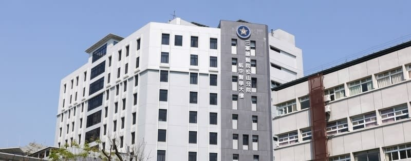
徹底告別眼鏡束縛！
三總近視雷射快速預約通道
想做近視雷射，卻卡在醫學中心掛號排隊、檢查等半年？
我們推出專屬綠色通道：由三總眼科權威團隊親自看診，引進德國頂規 AMARIS 1050RS 儀器，提供「角膜零接觸、不掀瓣」的極致安全 SMART TransPRK 手術，帶您安全重回清晰視界！
近視雷射快速通道如何運行？
Line 群組免排隊預約
加入預約 LINE 帳號，由小幫手直接為您安插特別檢查時段，省去現場掛號排隊時間。
三總松山分院：進行20多項完整術檢
在市中心、環境優雅的松山分院進行詳盡術前高階數據篩檢，由專科醫師把關條件。
三總內湖總院：強棒醫師手術執行
安排直通內湖總院高階手術室，使用最先進的頂規準分子雷射儀，快速流暢完成手術。
就近便利回診追蹤
術後回診可就近選擇松山分院 or 內湖總院，大幅節省跨院交通及候診時間。
為什麼選擇「表層零接觸」全雷射手術？
把安全擺在第一位，消除您對近視雷射器械碰觸眼球、揉眼睛移位的恐懼。
01. 不翻瓣、不掀瓣 (無傷口位移風險)
傳統 LASIK 需要在眼球上切開一片角膜瓣再蓋回，若未來遇到揉眼或劇烈運動碰撞，有終身位移的風險。我們採用的 SMART TransPRK 直接在角膜表層雷射塑型，保留最完整的眼球結構，運動員、軍警、愛運動者首選！
02. 器械零接觸 (降低心理恐懼感)
手術全程僅使用高階雷射進行，沒有任何鋼刀切削，也不做任何真空負壓抽吸（避免拉扯眼球造成的視網膜剝離隱憂）。這排除了器械接觸眼球的巨大心理壓迫感，怕痛、容易緊張的個案也能輕鬆配合。
03. 術後不乾眼 (守護角膜神經)
因為手術不深入削切角膜基質層深層，對角膜神經的破壞是主流手術中極微小的。臨床文獻證實，這能大幅度減少近視雷射手術後最常見的「長期眼睛乾澀」副作用，守護淚液分泌。
引領全球屈光雷射
德國頂規 AMARIS 四大智能科技
本院引進之 AMARIS 1050RS 曾榮獲「國際傑出醫學設計金獎」，用高科技解決眼球不自主微顫、雷射過熱酸痛等傳統手術痛點。
SmartPulse (SPT) 3D 平滑脈衝技術
超先進的 3D 雷射技術，使雷射光束分佈完全吻合角膜的 3D 立體幾何弧度。術後角膜表層如同打磨拋光般極度平滑，能顯著減輕術後初期的異物感，讓視力修復期大幅縮短。
Active 7D 零時差動態眼球追蹤系統
治療時縱使個案努力盯著綠光，眼球仍會產生不自主的微細顫動。此系統具備每秒 1050 次超高捕捉速率，能夠精確偵測並預測眼球在「下一毫秒」即將產生的位移，確保雷射點精準鎖定中心，絕不打偏。
ITEC 智能眼表溫度控制系統
過去傳統雷射切削產生的熱能堆積，常造成患者術後嚴重的眼部熱灼痛。ITEC 系統能在過程中動態調控能量的落點散布與散熱時間，避免熱能過度累積，大幅減緩術後發炎與酸澀不適。
AFLA 自動雙能量密度調整系統
自動調配雷射的高低能量輸出。在大面積快速削切矯正度數時使用高能量（快速省時），而在細緻拋光與微調塑形時則自動切換為低能量，兼顧手術高效率與極致光滑的切削品質。
近視雷射完整診療實景直擊
嚴謹、精密、專業！直擊病患在三總松山分院與內湖總院的一條龍醫療通關旅程。
高階光學斷層掃描與基礎精密檢測
在快速通道的第一關，個案將在交通便利的三總松山分院，接受全方位的高階前房斷層掃描。我們利用最新型 Oculus Pentacam HR 以及全自動氣動眼壓計，嚴格檢測您的角膜曲率、前房深度與厚度分佈。
診所儀器檢測焦點：
• 角膜三維斷層分析（Pentacam）：精準量測角膜前後表面曲率，排除潛在圓錐角膜風險。
• 自動眼壓厚度補償計：全面偵測眼球眼壓數據，預防並守護您的視神經安全。
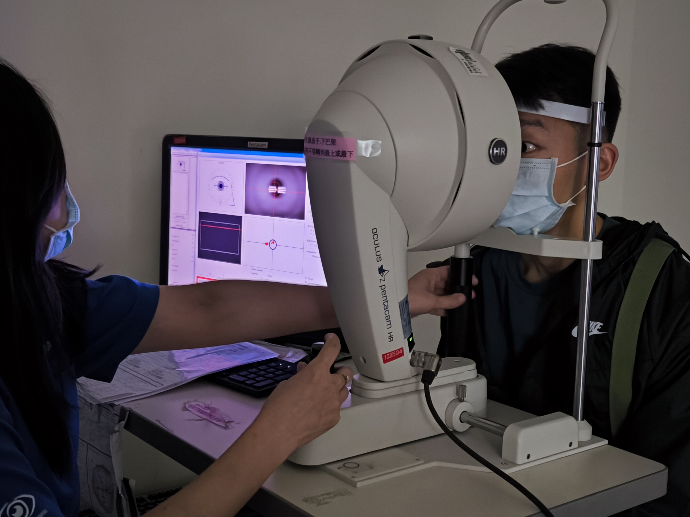
Oculus Pentacam 三維斷層掃描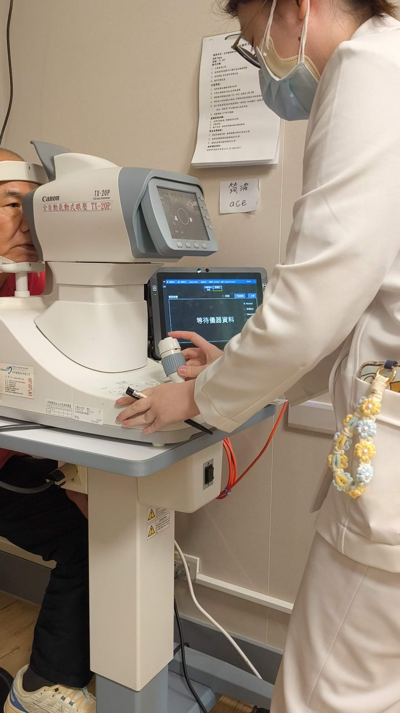
Canon 全自動眼壓與厚度補償計醫師親自解說角膜圖譜與手術行行前說明
精密數據量測後，由三總眼科專門主治醫師親自為您分析角膜地圖。不只詳細診斷您的角膜厚度是否合乎雷射切削標準，更會與您共同探討手術原理（醫病共享決策）。隨後，專業護理團隊將細心講解雷射同意書要點與術後照護守則，確保您在踏入手術房前全然安心。
臨床說明焦點：
• 一對一數據分析：結合個案主訴、淚膜分泌、高階像差，精算出最完美的客製削切程式。
• 詳盡安全導讀：逐字逐項為病患解析近視雷射手術同意書，打破您所有的心理焦慮。
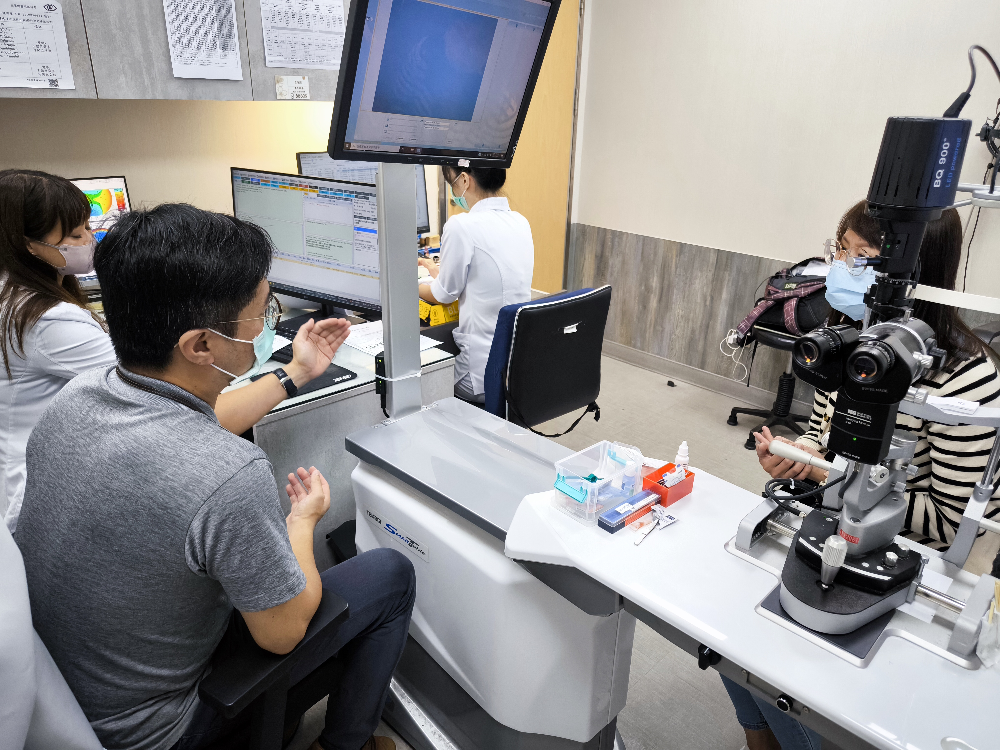
醫師親自分析角膜地形圖數據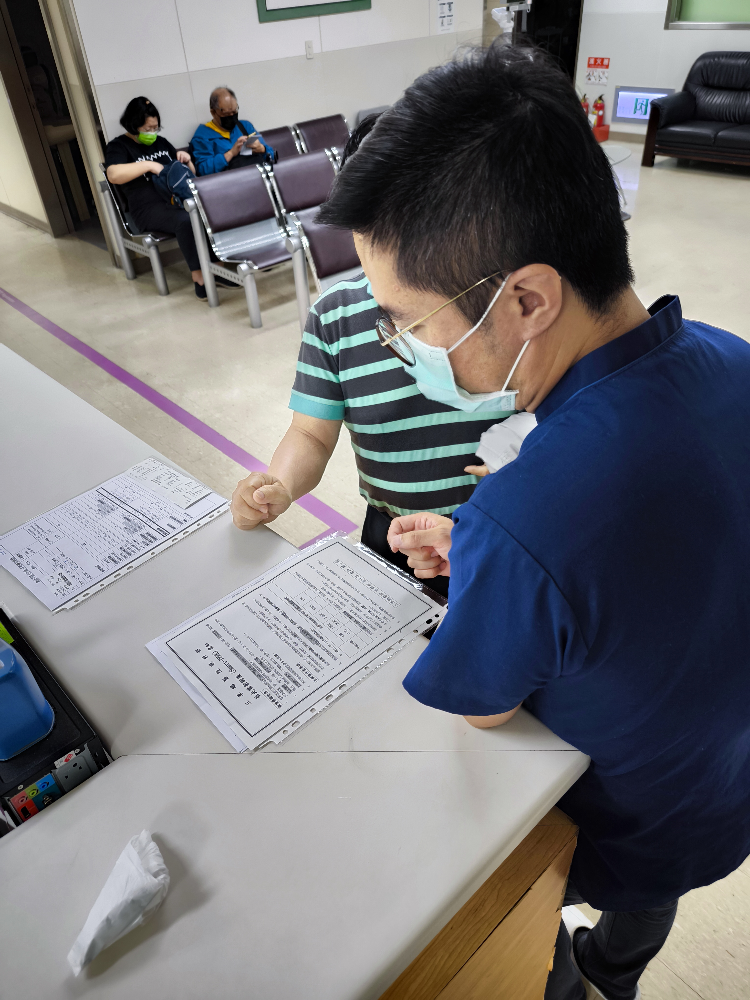
醫療團隊細緻解讀手術行前守則專屬無菌雷射手術室與高規格耗材
術檢完備後，您將由手術團隊成員導引進入高規格無塵手術室。該手術室是專為屈光雷射設置，不執行其他任何手術，且手術室潔淨與無菌等級完全符合國際標準。再搭配每位患者專屬、一次性（Disposable）拋棄式無菌手術耗材，為您的手術安全築起雙重鋼鐵防線。
安全防禦黃金指標：
• 專屬屈光手術室：不與一般眼科或外科手術共用，從根本上避免了細菌與病毒交叉感染的可能。
• 符合國際標準潔淨度：溫濕度、氣壓與氣流皆受全天候正壓密閉監控，高效率空氣微粒過濾器（HEPA）確保落塵符合標準。
• 100% 拋棄式無菌包：上台使用的眼部包、沖洗針劑、敷料均為全新耗材，用後即棄，杜絕感染可能。
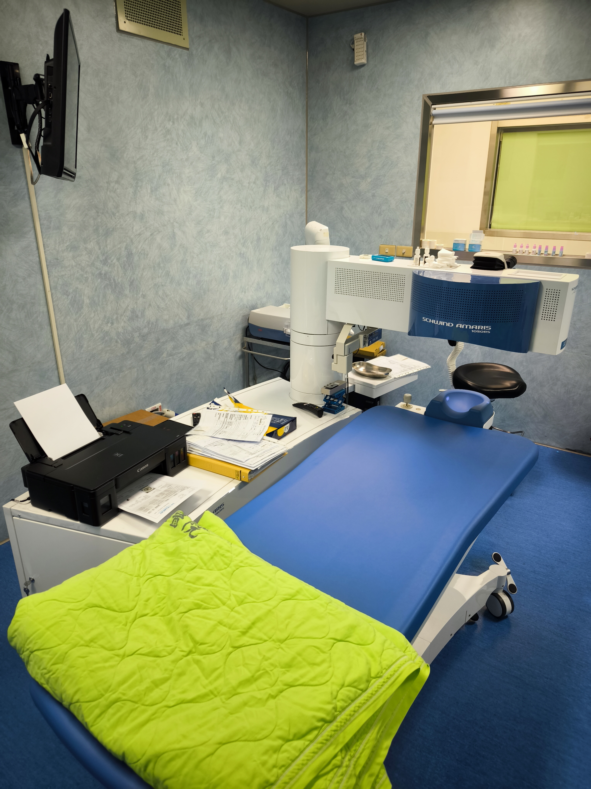
專屬屈光雷射無菌手術室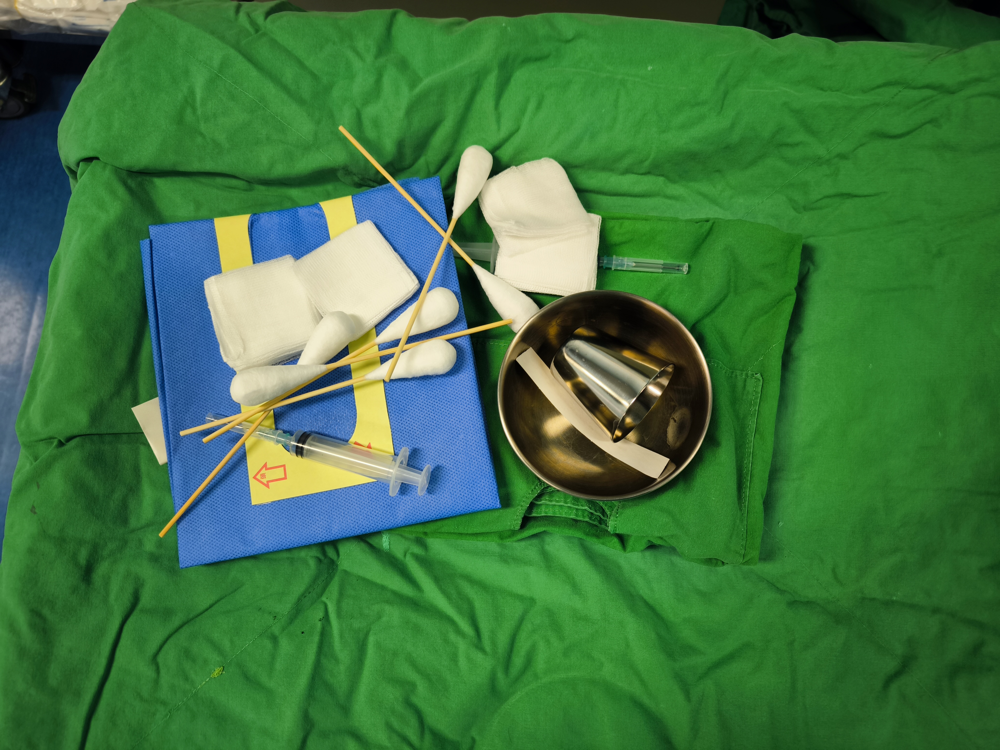
一對一專屬全新拋棄式無菌包德國頂規 AMARIS 1050RS 雷射切削實景
雷射手術全程由資深眼科專科醫師手動操控。AMARIS 1050RS 儀器投射準確的十字交叉引導光束（Red Target Laser Grid）鎖定瞳孔中心，高達 1050Hz 的 7D 動態追蹤系統會在毫秒間自動導航定位，使能量在角膜上皮與基質層進行完美削切與細緻 SPT 拋光，無刀、零接觸、無痛，在十多秒內即安全完成！
準分子雷射手術特色：
• 輔助追蹤紅外光網：紅外線導引十字網精密投射在角膜表層，確保不產生一度角偏斜。
• 零器械角膜接觸：雷射點直接照射塑形，沒有真空負壓抽吸，有效避免負壓過大造成的視網膜微損。
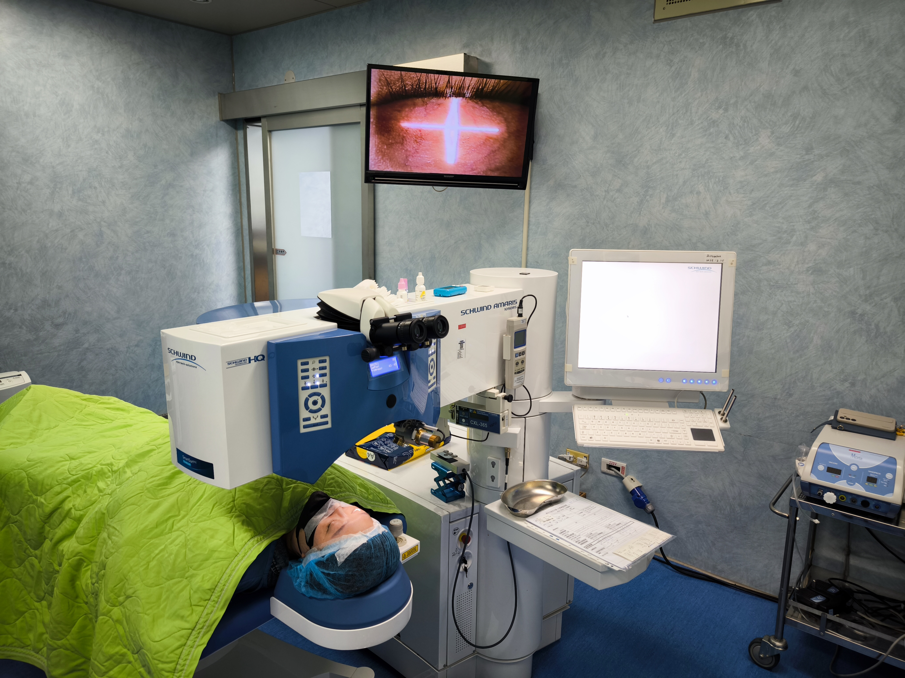
十字網定位追蹤光芒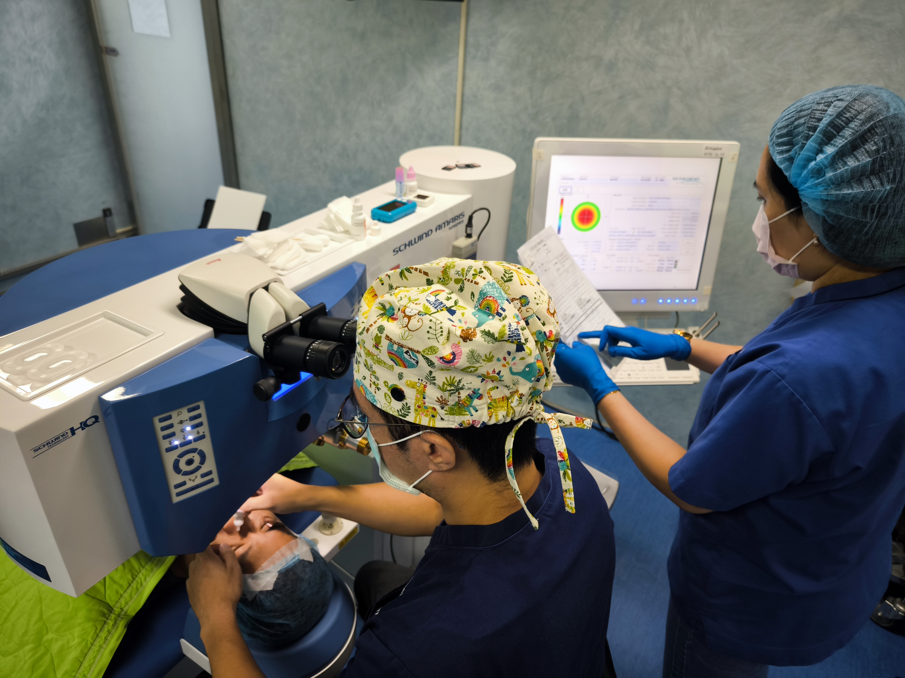
資深團隊精密手術操作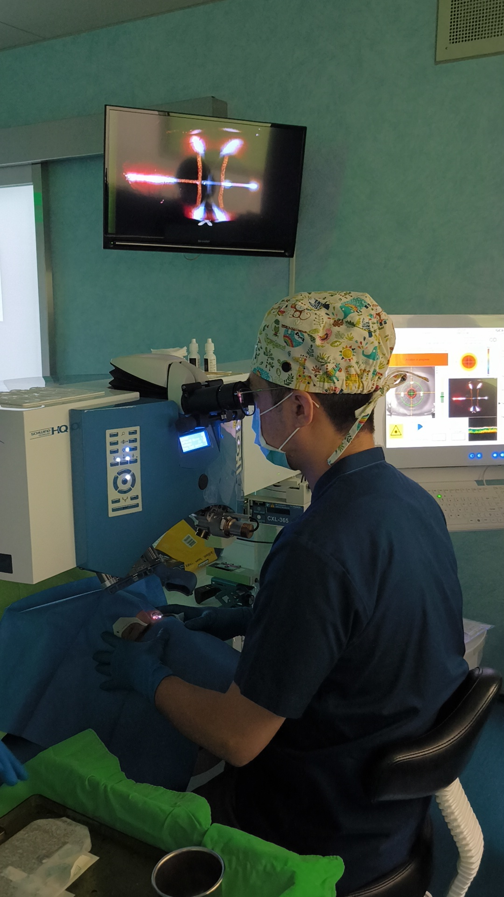
十多秒完成無瓣全雷射塑形兩院區就近聯合回診與裂隙燈細緻評估
手術完成後，回診追蹤是保護卓越視覺品質的關鍵。您不需每次跑回內湖總院排隊，直接預約快速通道松山分院門診，由主治醫師透過高倍裂隙燈顯微鏡（Slit Lamp），細密檢查角膜上皮的新生癒合速度、乾澀狀況與眼部微發炎反應，一條龍關懷直到完全恢復。
術後照照護把關：
• 高倍裂隙燈檢查：確認新生上皮平整度，並在第七天確認良好後移除保護型治療隱形眼鏡。
• 松山/內湖聯手照護：術前、術中與術後數據零落差同步，給您最完善的醫學中心照顧品質。
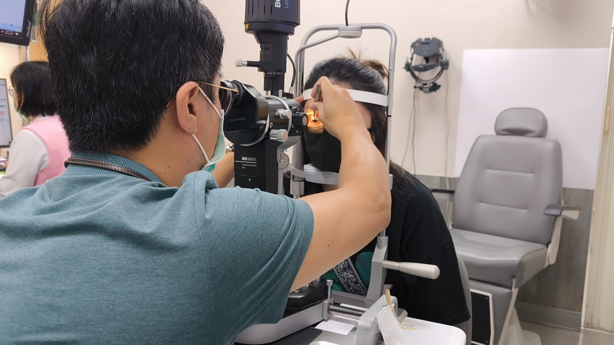
醫師親自進行術後裂隙燈高倍角膜上皮檢查快速通道強棒醫師陣容
結合三總松山分院與內湖總院強大眼科軍醫體系，由近視雷射領域極具威望的資深專家團隊聯手把關。
黃克豪
國防醫學大學醫學系醫學士 / 教育部部定講師
專業學經歷：
- 國軍飛行軍官屈光雷射術後鑑定醫師
- 空軍第五醫務中隊航醫分隊長/三軍總醫院松山分院航醫官
- 三軍總醫院眼科部總醫師/青光眼專科訓練資深住院醫師
- 三軍總醫院台北門診中心/醫務組聯合診所眼科主治醫師
- 新北蘆洲慶明診所支援醫師
- 中華民國眼科醫學會會員
核心專長指標：
- 國軍飛行員屈光雷射術後鑑定
- 民航局航空人員眼睛雷射手術術後評估(視野、對比視力、炫光夜視力)
- 學童視力保健、近視防治、角膜塑形片驗配
- 青光眼疾病篩檢與常規/合併白內障手術 (Phacotrab)
- 微創青光眼手術 (i-Stent、Xen、SLT小樑網冷雷射治療)
- 困難白內障術後二次拯救手術
- 視網膜疾病診斷、雷射處置及手術治療
- AI輔助全方位白內障治療指引併水晶體超音波乳化術/飛秒雷射白內障手術
翁子恆
國防醫學大學醫科所博士/教育部部定助理教授
專業學經歷：
- 三軍總醫院眼科部部總醫師、住院醫師
- 中華民國眼科醫學會屈光矯正委員會雷射手術組幹事醫師
- 中華民國眼科醫學會及教授醫學會屈光雷射及白內障專題講師
- 國軍近視雷射手術專案計劃負責人
- 率領屈光醫療小組榮獲 2023 年 SNQ 國家品質標章
- 中華民國眼科醫學會會員
- 德國 Schwind 準分子雷射與飛秒雷射高階認證專業醫師
核心專長指標：
- SMART TransPRK 全雷射零接觸手術設計
- SMILE / SMILE Pro 微創飛秒雷射視力矯正
- 客製化高階角膜波前像差引導與精準切削程式量身打造
- 圓錐角膜早期動態篩檢、角膜交聯術(CXL)交聯治療
- 多元乾眼症脈衝光與眼表淚膜屏障健康修復療程
專門安全快速通道門診時段表
松山分院與內湖總院跨院區雙向聯防
我適合 SMART TransPRK 雷射嗎？
透過簡單問答，快速篩選出最契合您的近視微創解決方案。
第一步：您的年齡是否已經超過 20 歲了？
第二步：您覺得每天清潔、配戴眼鏡或隱形眼鏡很麻煩且耗時嗎？
第三步：您未曾被診斷有嚴重的眼科疾病（如青光眼、黃斑部病變）？
第四步：您的工作、高強度休閒運動（如碰撞運動、潛水、健身）常因眼鏡而感到極度不便？
第五步：您對於任何器械直接接觸眼球（如真空吸引、壓力負壓）會感到不適 or 恐懼？
第六步：您平日有眼睛乾澀傾向，並擔心手術後造成嚴重且不可逆的乾眼症？
第七步：您是否希望能最大程度保留角膜厚度，拒絕任何角膜瓣位移相關併發症？
您的 SMART TransPRK 契合度評估
恭喜您！您的眼睛條件與預期非常契合「SMART TransPRK 零接觸」手術！
您的自檢狀況尚可。為求精準，仍建議預約高階術檢以進一步了解角膜厚度與曲率。
核心亮點：由於您極度重視「長期結構安全性」與「避免揉眼/撞擊後角膜瓣位移」，且希望術後保持健康淚液分泌，SMART TransPRK 對角膜基質層削切厚度較少、完全不掀瓣、零器械接觸，會是您非常完美的選擇。
*備註：此表單僅供初步醫病共享決策篩檢，實際手術適配度，仍需在三總松山分院接受高階儀器實體檢驗後，由主治醫師專業判斷。
群友常見問題與解答
統整自三總快速通道 Line 群組中，群友最關心與常重複提問的焦點問題。
近視度數越深，雷射消耗的角膜基質層厚度越多。為確保術後眼睛結構的長期穩定與安全，避開「圓錐角膜」後遺症，術後角膜必須保留足夠的安全厚度。
本院引進的 SMART TransPRK 消耗的角膜厚度相對其他術式少。且因為術中完全不用任何真空負壓抽吸，有效避免高度近視者眼球脆弱造成的額外負擔與視網膜剝離風險。高度近視群友是否能手術，仍必須預約詳盡的實體高階術前檢查後由醫師親自判定。
手術完全無須全身麻醉，也不需要打麻醉針。手術前只需在眼球點上幾滴「表面局部麻醉眼藥水」即可。 手術過程中除了撐眼器外，全程不會有任何器械碰觸到您的眼角膜。雷射施打時會發出聲響及散發異味（此為雷射作用於角膜基質蛋白時之正常現象），群友僅需放鬆凝視逆時針閃爍光點，約數十秒即可快速完成。
術後立即視力大約落在 0.3 到 0.4 之間，配合我們在手術完為您戴上的治療保護型隱形眼鏡，已足以應付日常生活起居所須。
第 2 至第 3 天：為角膜上皮新生的黃金期，此時會有異物感、流淚、畏光或偶爾酸澀。請按時服用我們為您開立的舒緩藥物與口服止痛。
第七天：通常角膜上皮已初步新生，可安排回診松山分院 or 內湖總院，由醫師確認上皮修補良好後移除保護型隱形眼鏡。此後視力會逐漸走向清晰，術後 1 週到 1 個月隨角膜水腫、微發炎反應代謝，視覺品質會越來越紮實。
任何近視雷射在數年後，皆有些微度數回退的理論機率，回退程度因個人用眼習慣而異（通常術前度數越高、回退機率相對高一點）。
SMART TransPRK 手術因保留較多的角膜厚度，且角膜結構較穩定，度數回退機率在眼科臨床文獻中顯著低於其他傳統手術。術後仍需維持 30 分鐘休息 10 分鐘的良好用眼習慣，以確保長青視力。
加入三總松山/內湖 近視雷射快速通道
您不需再耗費時間前往醫院現場大排長龍預約。加入專屬 Line 諮詢群組，我們有專人為您對接預約時段，享有松山分院「快速多合一詳盡術前檢查服務」！
1. 一對一專人協調
直接私訊預約松山分院快速通道，省時方便。
2. 三總眼科強棒陣容
松山/內湖專家聯合衛教，手術精準安全。
3. 一條龍專屬提醒
檢查、術後追蹤及注意事項由小幫手溫馨推播。
手機掃碼 立即預約
或搜尋快速通道對接帳號進行安排